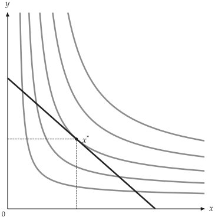
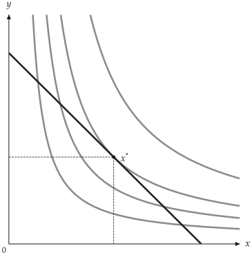
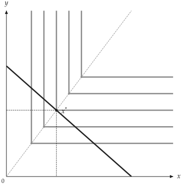
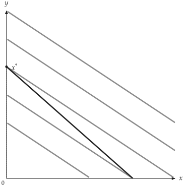
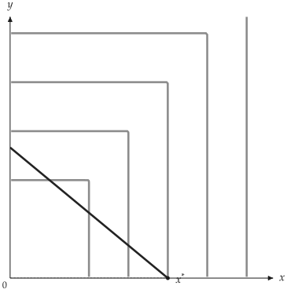
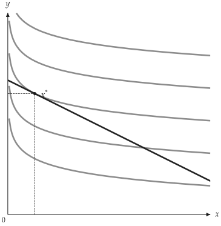
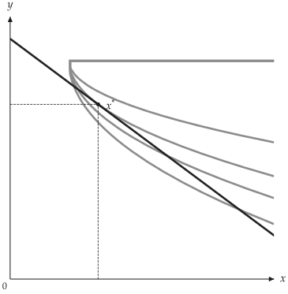
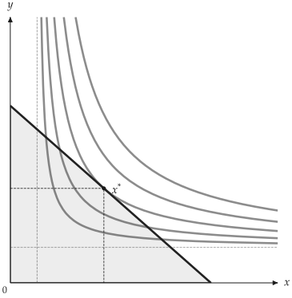
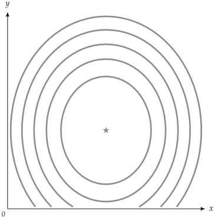

核心模型
內建模型位於 utility_viz.models，可傳入 solve() 與 Canvas.add_utility()。本章依偏好特性分組，列出各模型的效用函數、參數、特有行為與圖形。
平滑偏好
Cobb-Douglas、CES 與 Translog 的無異曲線為平滑曲線；最適解取決於模型參數、價格與所得。
Cobb-Douglas
CobbDouglas商品 \(x\) 的權重。
商品 \(y\) 的權重。
Cobb-Douglas 效用函數 Cobb (1928)：
正指數決定兩種商品的相對權重，無異曲線以座標軸為漸近線。
CES
CES商品 \(x\) 的權重。
商品 \(y\) 的權重。
替代參數，且 \(\rho \ne 1\)。
CES Arrow (1961) 透過 rho 調整商品間的替代彈性：
替代彈性為 \(\sigma = 1 / (1 - \rho)\)。極限形式分別為 Cobb-Douglas（\(\rho \to 0\)）、完全互補（\(\rho \to -\infty\)）與完全替代（\(\rho \to 1\)）。
from utility_viz import Canvas, Config, levels, solve
from utility_viz.models import CES
# 載入圖形設定
Config.load("econ-viz.toml").use()
model = CES(alpha=0.5, beta=0.5, rho=-0.5)
eq = solve(model, px=2.0, py=3.0, income=30.0)
cvs = Canvas(x_max=20, y_max=15, x_label="$x$", y_label="$y$")
cvs.add_utility(model, levels=levels.around(eq.utility, n=5))
cvs.add_budget(2.0, 3.0, 30.0)
cvs.add_equilibrium(eq)
cvs.save("ces.png")

CES 曲線
Translog
Translog對數效用截距。
\(\ln x\) 的一次項權重。
\(\ln y\) 的一次項權重。
\(x\) 方向的曲率。
\(y\) 方向的曲率。
\(x\) 與 \(y\) 的交叉效果。
Translog Christensen (1975) 以對數的一次項、二次項與交叉項表示效用：
二次項與交叉項控制曲率。所有 \(\beta\) 係數為零時，退化為 Cobb-Douglas 型的對數線性形式。
from utility_viz import Canvas, Config, levels, solve
from utility_viz.models import Translog
# 載入圖形設定
Config.load("econ-viz.toml").use()
model = Translog(alpha_x=0.6, alpha_y=0.4, beta_xy=0.12)
eq = solve(model, px=2.0, py=3.0, income=30.0)
cvs = Canvas(x_max=18, y_max=12, x_label="$x$", y_label="$y$")
cvs.add_utility(model, levels=levels.around(eq.utility, n=4))
cvs.add_budget(2.0, 3.0, 30.0)
cvs.add_equilibrium(eq)
cvs.save("translog.png")

Translog 範例
拗折點與角解
無異曲線有拗折或為直線時，最適解可能位於拗折點或座標軸，不能僅以相切條件判定。
完全互補
Leontief商品 \(x\) 的權重。
商品 \(y\) 的權重。
完全互補效用函數：
無異曲線呈 L 型。權重與價格為正時，最適點滿足固定比例 \(a x = b y\)。
轉角在圖片與 TikZ 輸出中都畫成精確的直角；以 CustomUtility 建立的分段 min/max 函數亦同。
from utility_viz import Canvas, Config, levels, solve
from utility_viz.models import Leontief
# 載入圖形設定
Config.load("econ-viz.toml").use()
model = Leontief(a=1.0, b=1.0)
eq = solve(model, px=2.0, py=3.0, income=30.0)
cvs = Canvas(x_max=20, y_max=15, x_label="$x$", y_label="$y$")
cvs.add_utility(
model,
levels=levels.around(eq.utility, n=5),
show_rays=True,
# 每個折點畫射線與標記
show_kinks=True,
)
cvs.add_budget(2.0, 3.0, 30.0)
cvs.add_equilibrium(eq)
cvs.save("leontief.png")

完全互補射線
完全替代
PerfectSubstitutes商品 \(x\) 的邊際效用。
商品 \(y\) 的邊際效用。
完全替代效用函數：
無異曲線為直線。每元邊際效用不同時，最適解為僅購買較高者的角解；兩者相等時，預算線上的消費組合皆為最適解。
from utility_viz import Canvas, Config, levels, solve
from utility_viz.models import PerfectSubstitutes
# 載入圖形設定
Config.load("econ-viz.toml").use()
model = PerfectSubstitutes(a=1.0, b=2.0)
eq = solve(model, px=2.0, py=3.0, income=30.0)
cvs = Canvas(x_max=20, y_max=15, x_label="$x$", y_label="$y$")
cvs.add_utility(model, levels=levels.around(eq.utility, n=5))
cvs.add_budget(2.0, 3.0, 30.0)
cvs.add_equilibrium(eq)
cvs.save("perfect_substitutes.png")

完全替代角解
最大值效用
maximum商品 \(x\) 的權重。
商品 \(y\) 的權重。
以兩個加權數量的最大值定義效用：
此偏好不具凸性。在正權重與正價格下，最適解位於效用較高的預算線軸截距。此模型以 CustomUtility 建立（詳見進階模型）。
import numpy as np
from utility_viz import Canvas, Config, levels, solve
from utility_viz.models import CustomUtility
# 載入圖形設定
Config.load("econ-viz.toml").use()
model = CustomUtility(
func=lambda x, y: np.maximum(x, y), name="maximum"
)
eq = solve(model, px=2.0, py=3.0, income=30.0)
cvs = Canvas(x_max=25, y_max=20, x_label="$x$", y_label="$y$")
cvs.add_utility(model, levels=levels.around(eq.utility, n=5))
cvs.add_budget(2.0, 3.0, 30.0)
cvs.add_equilibrium(eq)
cvs.save("maximum.png")

最大值效用
所得與參考點
以下模型分別描述準線性偏好、最低消費需求與具有極樂點的飽和偏好。
準線性
QuasiLinear遞增且凹的函數 \(f\)。
以線性方式進入的商品。
準線性效用中，一種商品以線性項表示：
在內部解範圍內，非線性商品的需求不受所得影響。linear_in 指定線性項對應的商品。
import numpy as np
from utility_viz import Canvas, Config, levels, solve
from utility_viz.models import QuasiLinear
# 載入圖形設定
Config.load("econ-viz.toml").use()
model = QuasiLinear(v_func=np.log, linear_in="y")
eq = solve(model, px=1.0, py=2.0, income=20.0)
cvs = Canvas(x_max=15, y_max=15, x_label="$x$", y_label="$y$")
cvs.add_utility(model, levels=levels.around(eq.utility, n=5))
cvs.add_budget(1.0, 2.0, 20.0)
cvs.add_equilibrium(eq)
cvs.save("quasi_linear.png")

準線性偏好
Haagsma
Haagsma商品 \(x\) 的權重，必須小於 alpha_y。
商品 \(y\) 的權重。
商品 \(x\) 的數量下界。
商品 \(y\) 的數量上界。
回傳閉式內部解。
檢查指定預算下商品 \(x\) 是否為季芬財。
Haagsma (2012) 效用函數為
定義域為 \(x > \gamma_x\) 且 \(0 \le y < \gamma_y\)，並要求 \(0 < \alpha_x < \alpha_y\)。商品 \(x\) 的 Marshall 需求隨所得下降；當 \(\gamma_y p_y < I < \gamma_y p_y + \gamma_x p_x\) 時，商品 \(x\) 為季芬財。
所得達到 \(\gamma_y p_y + \gamma_x p_x\) 時，效用在預算線上沒有有限最大值，模型會拋出 InvalidParameterError。
from utility_viz import Canvas, Config, levels, solve
from utility_viz.models import Haagsma
# 載入圖形設定
Config.load("econ-viz.toml").use()
model = Haagsma(gamma_y=10.0)
eq = solve(model, px=1.0, py=1.0, income=11.0)
cvs = Canvas(x_max=9, y_max=12, x_label="$x$", y_label="$y$")
cvs.add_utility(model, levels=levels.around(eq.utility, n=4))
cvs.add_budget(1.0, 1.0, 11.0)
cvs.add_equilibrium(eq)
cvs.save("haagsma.png")

\(\gamma_y = 10\) 的 Haagsma
Stone-Geary
StoneGeary超額 \(x\) 的權重。
超額 \(y\) 的權重。
基本需求量 \(\overline{x}\)。
基本需求量 \(\overline{y}\)。
Stone-Geary Stone (1954)Geary (1950) 在 Cobb-Douglas 中加入最低消費量：
滿足基本需求量 \(\overline{x}\) 與 \(\overline{y}\) 後，剩餘所得依權重分配。
from utility_viz import Canvas, Config, levels, solve
from utility_viz.models import StoneGeary
# 載入圖形設定
Config.load("econ-viz.toml").use()
model = StoneGeary(alpha=0.5, beta=0.5, bar_x=2.0, bar_y=2.0)
eq = solve(model, px=2.0, py=3.0, income=30.0)
cvs = Canvas(x_max=20, y_max=15, x_label="$x$", y_label="$y$")
cvs.add_utility(model, levels=levels.around(eq.utility, n=5))
cvs.add_budget(2.0, 3.0, 30.0, fill=True)
cvs.add_equilibrium(eq)
cvs.save("stone_geary.png")

Stone-Geary
飽和偏好
Satiation極樂點座標 \(x^*\)。
極樂點座標 \(y^*\)。
\(x\) 軸方向的曲率。
\(y\) 軸方向的曲率。
飽和偏好以 \((x^*, y^*)\) 為效用最高的極樂點：
當 \(a, b > 0\)，偏離極樂點會使效用下降，無異曲線為封閉橢圓，偏好不具單調性。
import numpy as np
from utility_viz import Canvas, Config, levels
from utility_viz.models import Satiation
# 載入圖形設定
Config.load("econ-viz.toml").use()
model = Satiation(bliss_x=6.0, bliss_y=4.0)
# 曲線取自效用值網格
X, Y = np.meshgrid(
np.linspace(0.1, 12.0, 300), np.linspace(0.1, 10.0, 300)
)
cvs = Canvas(x_max=12, y_max=10, x_label="$x$", y_label="$y$")
# u 的五個百分位數
cvs.add_utility(
model, levels=levels.percentile(model(X, Y), n=5)
)
cvs.save("satiation.png")

極樂點飽和偏好